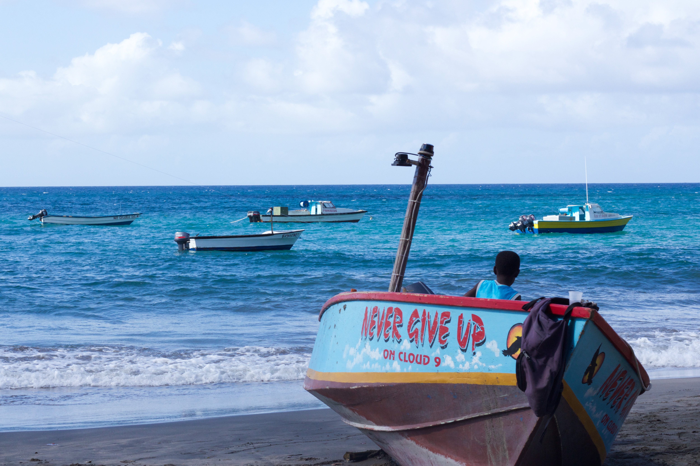

Private AfroCentric Tours Grenada
In the spirit of Ubuntu we welcome you to share the best of Grenadian hospitality. The island has paradise to offer where the locals know how to treat a guest because we reserve the best for our Guest.

An authentic Grenada Experience
- Private and Personalized
- 100% customizable to your interest.
- A knowledgeable local guide
- Private transportation.
- Pickup and Drop off.
- Advance booking on request.
- Duration 8 Hours extension possible.
Personalize your Itinerary
I am confident in my ability to provide expert advice on the best sights and locations, ensuring you can enjoy the activities you wish to explore. I will highlight all points of interest and provide detailed information on everything displayed at various sights.
With my expertise, I can also help you avoid crowds so that you can take your time and fully savor each location without interruptions.

Immerse yourself in the unparalleled beauty of this island, where every corner offers a breathtaking view. Do not miss the opportunity to capture these spectacular moments for memories that will last a lifetime.
Lunch
If you’re looking for a place to have lunch, I can help you find the perfect spot. Based on my experience, I can recommend restaurants for you to try. If you prefer, I can also arrange a lunchbox with your favorite refreshments. If you’re feeling adventurous, you can create your unique lunch experience on the nearest beach or in a tranquil, scenic spot. You can choose the menu and cost according to your liking.
Afternoon Alternative
Are you looking to unwind in the afternoons? How about a visit to a crater lake, waterfall, or beach? Let me help you plan a fun experience of relaxation, entertainment, and education. Just reach out with your interests, visit duration, and group size, and I will be happy to assist.
As a knowledgeable and reliable tour guide, I take pride in my attention to detail and honest advice. Rest assured, all Private AfroCentric Tours include pick-up and drop-off at your hotel, marina, or Cruise Ship Terminal.
Let PAT Grenada take care of you to ensure that you feel at home.